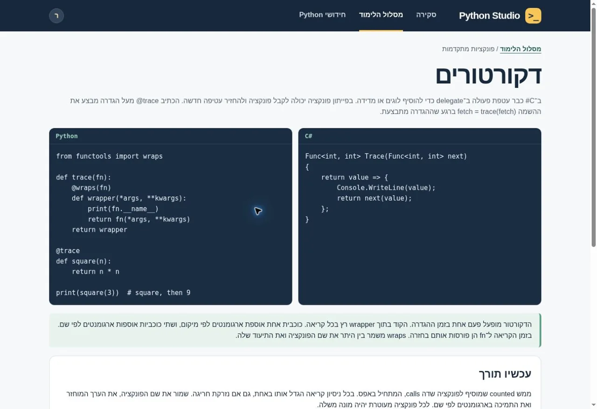

מ־C# לפייתון
סדנה בעברית למפתחי .NET שרוצים לכתוב Python באופן עצמאי. ב־16 שיעורים משווים בין מימושים, מתרגלים דקורטורים, גנרטורים וקוד אסינכרוני ובונים מתזמן משימות.
פתח את Python Studioאיך מתרגלים?
בחר שיעור, קרא את שתי הדוגמאות וכתוב פתרון בעורך. לחץ על ״בדוק פתרון״ כדי להריץ את הבדיקות. הטיוטה וההתקדמות נשמרות בדפדפן הנוכחי.
